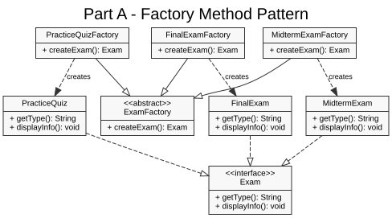
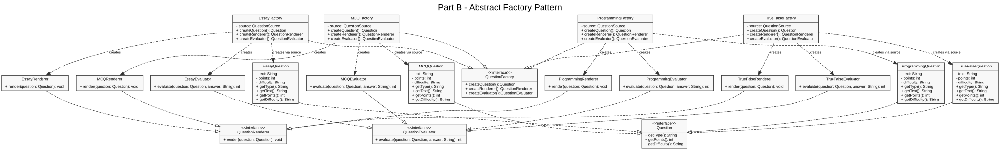
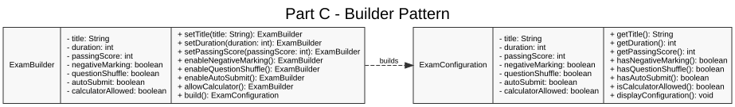
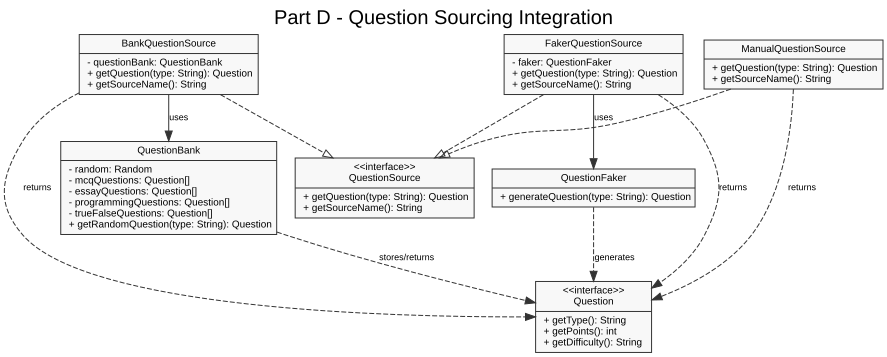

Exam creation is delegated to concrete factory subclasses. The client depends on
ExamFactory and Exam, not direct product construction.

Each concrete question factory creates a related family: question, renderer, and evaluator.
The factories also receive a QuestionSource as required by Part D.

ExamBuilder constructs an immutable ExamConfiguration object through
chained setup methods and a final build() call.

QuestionSource abstracts where questions come from. Bank, faker, and manual
sources can be swapped without changing the question factory interface.

Note: The current implementation uses getQuestion(String type), which keeps one
source object capable of serving multiple question families.